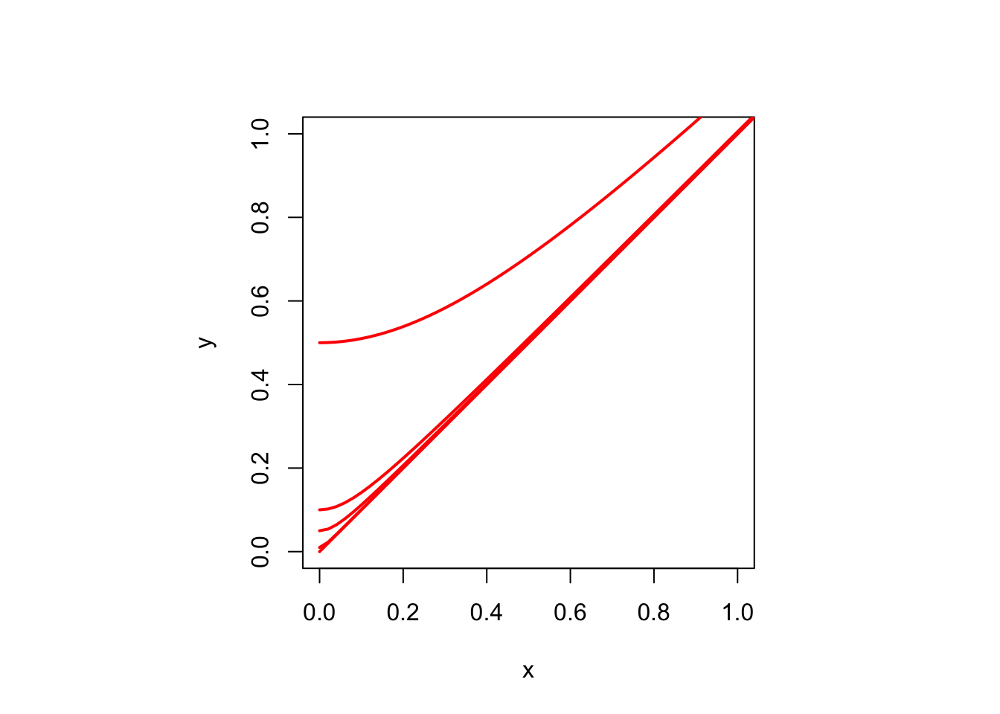
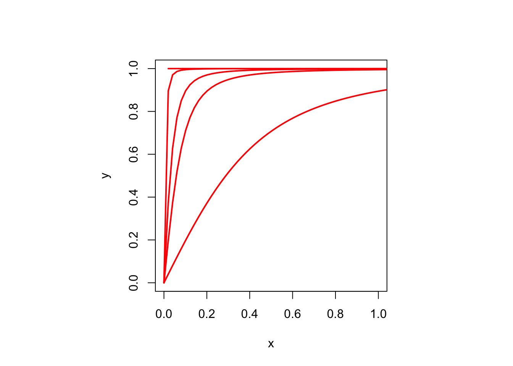
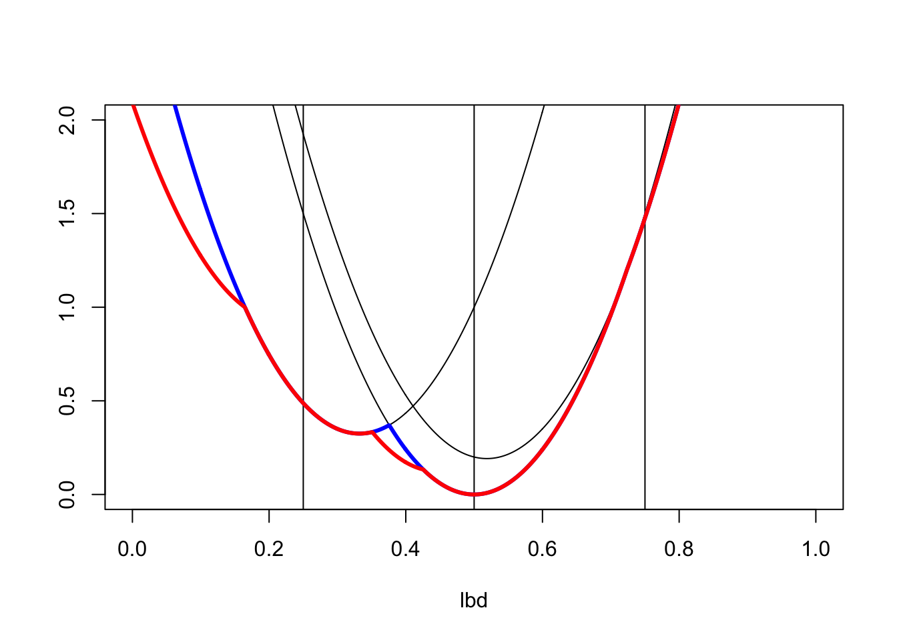
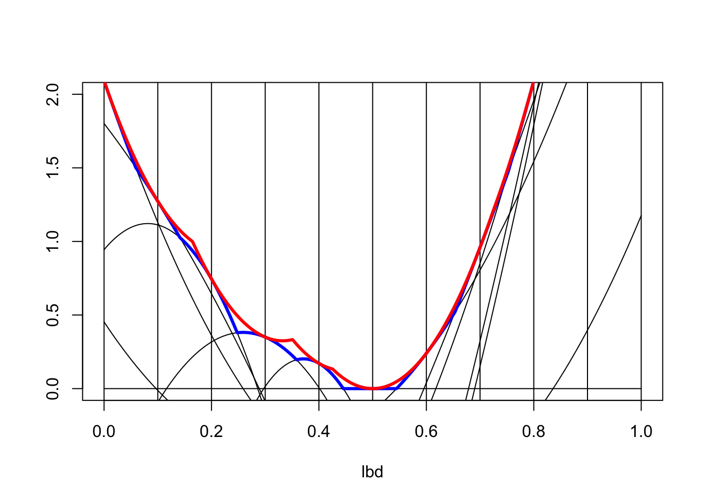

2 Properties of Stress
2.1 Notation
The notation used in the smacof approach to MDS first appeared in De Leeuw (1977a), and was subsequently used in several of the related smacof references, such as De Leeuw and Heiser (1982), De Leeuw (1988), chapter 8 of Borg and Groenen (2005), and De Leeuw and Mair (2009).
2.1.1 Expanding
We expand stress by writing out the squares of the residuals and then summing. Define
\[\begin{align} \eta_\delta^2&:=\mathop{\sum\sum}_{1\leq i<j\leq n}w_{ij}\delta_{ij}^2,\tag{2.1}\\ \rho(X)&:=\mathop{\sum\sum}_{1\leq i<j\leq n}w_{ij}\delta_{ij}d_{ij}(X),\tag{2.2}\\ \eta^2(X)&:=\mathop{\sum\sum}_{1\leq i<j\leq n}w_{ij}d_{ij}^2(X).\tag{2.3} \end{align}\]
More precisely, using conditional summation,
\[\begin{align} \rho(X)&:=\mathop{\sum\sum}_{1\leq i<j\leq n}\left\{w_{ij}\delta_{ij}d_{ij}(X)\mid w_{ij}\delta_{ij}>0\right\},\tag{2.4}\\ \eta^2(X)&:=\mathop{\sum\sum}_{1\leq i<j\leq n}\left\{w_{ij}d_{ij}^2(X)\mid w_{ij}>0\right\}\tag{2.5}. \end{align}\]
Remember that we have normalized by \(\eta_\delta^2=1\). With our newly defined functions \(\rho\) and \(\eta^2\) we can write stress as
\[\begin{equation} \sigma(X)=1-2\rho(X)+\eta^2(X)=(1-\rho(x))^2+(\eta^2(X)-\rho^2(X)). \tag{2.6} \end{equation}\]
The CS inequality implies that for all \(X\)
\[\begin{equation} \rho(X)=\mathop{\sum\sum}_{1\leq i<j\leq n}w_{ij}\delta_{ij}d_{ij}(X)\leq\eta_\delta\eta(X)=\eta(X), \tag{2.7} \end{equation}\]
and thus, from (2.6),
\[\begin{align} \sigma(X)&\geq(1-\eta(X))^2,\tag{2.8}\\ \sigma(X)&\geq(1-\rho(X))^2.\tag{2.9} \end{align}\]
2.1.2 Matrix Expressions
Using matrix notation allows us to arrive at compact expressions, which suggest various mathematical and computational shortcuts. In order to use matrix notation for distances we use the difference matrices \(A_{ij}\), discussed in section 25.2.3.
We start with \(d_{ij}^2(X)=\text{tr}\ X'A_{ij}X\). Define
\[\begin{equation} V:=\mathop{\sum\sum}_{1\leq i<j\leq n}w_{ij}A_{ij}, \tag{2.10} \end{equation}\]
so that
\[\begin{equation} \eta^2(X)=\text{tr}\ X'VX. \tag{2.11} \end{equation}\]
The matrix \(V\) has off-diagonal elements equal to \(-w_{ij}\) and diagonal elements \(v_{ii}=\sum_{j\not= i} w_{ij}\) It is symmetric, positive semi-definite, and doubly-centered. Thus it is singular, because \(Ve=0\).
Section 25.2.12 discusses the rank of \(V\) in more detail and defines reducibility of \(W\). If \(W\) is reducible the MDS problem separates into a number of smaller independent MDS problems. We will assume in the sequel, without loss of generality, that this does not occur, and that consequently \(W\) is irreducible.
The Moore-Penrose inverse, defined in section 25.2.10 of chapter 25, of \(V\) is
\[\begin{equation} V^{-1}=(V+\frac{ee'}{n})^{-1}-\frac{ee'}{n}. \tag{2.12} \end{equation}\]
If all weights are one, then \(V=nJ\) and \(V^{-1}=\frac{1}{n}J\), with \(J\) the centering matrix \(I-\frac{1}{n}ee'\) from section 25.2.2.
Writing out \(\rho(X)\) from (2.2) in matrix form is a bit more complicated. Define
\[\begin{equation} r_{ij}(X):=\begin{cases}0&\text{ if }d_{ij}(X)=0,\\ \frac{\delta_{ij}}{d_{ij}(X)}&\text{ if }d_{ij}(X)>0, \end{cases} \tag{2.13} \end{equation}\]
and
\[\begin{equation} B(X):=\mathop{\sum\sum}_{1\leq i<j\leq n}w_{ij}r_{ij}(X)A_{ij}. \tag{2.14} \end{equation}\]
Then we have
\[\begin{equation} \rho(X)=\text{tr}\ X'B(X)X. \tag{2.15} \end{equation}\]
Just like \(V\), the matrix-valued function \(B\) is symmetric, positive-semidefinite, and doubly-centered. If all dissimilarities and distances are positive then irreducibility of \(W\) implies that the rank of \(B(X)\) is equal to \(n-1\). Note that if \(\delta_{ij}=d_{ij}(X)>0\) for all \(i,j\) (perfect fit), then the \(r_{ij}\) from (2.13) are all equal to one, and \(B(X)=V\).
In (2.13) we have set \(r_{ij}(X)=0\) if \(d_{ij}(X)=0\). This is arbitrary. Since \(b_{ij}(X)=r_{ij}(X)\) if \(d_{ij}(X)=0\) we get a different matrix \(B(X)\) if we choose to set, say, \(r_{ij}(X)=1\) or \(r_{ij}(X)=\delta_{ij}\) whenever \(d_{ij}(X)=0\). But
\[\begin{equation} B(X)X=\mathop{\sum\sum}_{1 leq i<j\leq n}w_{ij}r_{ij}(X)(e_i-e_j)(x_i-x_j)' \tag{2.16} \end{equation}\]
is the same, no matter how we choose \(r_{ij}(X)\) if \(d_{ij}(X)=0\). And, consequently, so is \(\rho(X)=\text{tr}\ X'B(X)X\).
We now see, from equation (2.6), that
\[\begin{equation} \sigma(X)=1-2\ \text{tr}\ X^TB(X)X+\text{tr}\ X^TVX. \tag{2.17} \end{equation}\]
2.2 Global Properties
2.2.1 Boundedness
Stress is a sum of squares, and thus it is non-negative, i.e. bounded below by zero. Because \(\sigma(\lambda X)=1-\lambda\rho(X)+\frac12\lambda^2\eta^2(X)\) we see that \(\sigma\) is unbounded above. In fact, it is an unbounded convex quadratic on each ray through the origin.
2.2.2 Invariance
Stress only depends on the distances between the points in the configuration, and thus it is invariant under rigid geometrical transformations (rotations, reflections, and translations). Thus \(\sigma(XK)=\sigma(X)\) for all \(K\) with \(K'K=KK'=I\). Also \(\sigma(X+eu')=\sigma(X)\) for all \(u\in\mathbb{R}^p\). And stress is even, i.e. \(\sigma(-X)=\sigma(X)\).
It follows directly that the minimizer of stress, if it exists, cannot possibly be unique. Whatever the value at a minimum, it is shared by all rigid transformations of the configuration.
It also follows from translational invariance that we can minimize stress over the \(p(n-1)\) dimensional subspace of \(\mathbb{R}^{n\times p}\) of all \(n\times p\) matrices which are centered, i.e. have \(e'X=0\). Or over all matrices which have the first row \(x_1\) equal to xero. Rotational invariance implies we can also require without loss of generality that \(X\) is orthogonal, i.e. that \(X'X\) is diagonal.
2.2.3 Continuity
Both \(d_{ij}\) and \(d_{ij}^2\) are continuous on \(\mathbb{R}^{n\times p}\). This follows easily from the formula for Euclidean distance, together with the composition rules for continuous functions and the continuity of the square and the square root.
Continuity also follows from the continuity of the norm, because \(d_{ij}(X)=\|X'(e_i-e_j\|\), and it follows from the general result that in any metric space \(\mathcal{X}=\langle X,d\rangle\) the metric \(d\) is continuous on \(\mathcal{X}\otimes\mathcal{X}\) with the product topology.
Convexity, discussed in section 2.3 of this chapter, also implies continuity.
2.2.4 Coercivity
Stress is not a convex function of the configuration. But it is bowl shaped around the origin, in a way we are going to make more precise. First a definition: A function is coercive if for every sequence \(\{X_k\}\) with \(\lim_{k\rightarrow\infty}\|X_k\|=\infty\) we also have \(\lim_{k\rightarrow\infty}\sigma(X_k)=+\infty\).
It is easy to see that \(\sigma\) is coercive. We know that \(\sigma(X)=1-2\rho(X)+\eta^2(X)\). Now the CS inequality gives \(\rho(X)\leq\eta(X)\), and thus \(\sigma(X)\geq(1-\eta(X))^2\), which shows that stress is coercive.
It follows from coercivity (Ortega and Rheinboldt (1970), section 4.3) that all level sets of stress \(\mathcal{L}_s:=\{X\mid \sigma(X)=s\}\) are compact, and that there is at least one configuration for which the global minimum of stress is attained.
2.3 Convexity
Stress is definitely not a convex function of the configuration. Although if it actually was convex there would not be as much motivation for writing this book. Nevertheless convexity still play an important part in our analysis of MDS, ever since De Leeuw (1977a).
2.3.1 Distances
The convexity in the MDS problem comes from the convexity of the distance and the squared distance.
By the triangle inequality
\[ d_{ij}(\lambda X +(1-\lambda) Y)=\|(\lambda X +(1-\lambda) Y)'(e_i-e_j)\|=\|\lambda X'(e_i-e_j) +(1-\lambda) Y'(e_i-e_j)\|\leq\lambda d_{ij}(X)+(1-\lambda)d_{ij}(Y). \] If \(g\) is convex and \(f\) is convex and increasing then \(f\circ g\) is convex.
Because \(g\) is convex \(g(\lambda x + (1-\lambda)y)\leq\lambda g(x) + (1-\lambda)g(y)\). Because \(f\) is increasing and convex
\[ f(g(\lambda x + (1-\lambda)y))\leq f(\lambda g(x) + (1-\lambda)g(y))\leq\lambda f(g(x))+(1-\lambda)f(g(y)). \]
First, for \(0\leq\lambda\leq 1\),
\[\begin{equation} d_{ij}^2(\lambda X+(1-\lambda)Y) =\lambda^2d_{ij}^2(X) + (1-\lambda)^2d_{ij}^2(Y)+ 2\lambda(1-\lambda)(x_i-x_j)'(y_i-y_j) \tag{2.18} \end{equation}\]
Thus, using 25.1,
\[\begin{equation} 2\lambda(1-\lambda)(x_i-x_j)'(y_i-y_j) \leq\lambda(1-\lambda)(d_{ij}^2(X)+d_{ij}^2(Y)). \tag{2.19} \end{equation}\]
Combining (2.18) and (2.19) proves convexity of the squared distance.
Now use equation (2.18) and the CS inequality in the form \((x_i-x_j)'(y_i-y_j)\leq d_{ij}(X)d_{ij}(Y)\). This gives
\[\begin{equation} d_{ij}^2(\lambda X +(1-\lambda)Y)\leq (\lambda d_{ij}(X)+(1-\lambda)d_{ij}(Y))^2. \tag{2.20} \end{equation}\]
Taking square roots on both sides of equation (2.20) proves convexity of the distance.
2.3.2 DC Functions
In basic MDS
- \(\rho\) is a non-negative convex function, homogeneous of degree one.
- \(\eta^2\) is a non-negative convex quadratic form, homogeneous of degree two.
- \(\sigma\) is a non-negative difference of two convex functions.
This follows because \(\eta^2\) is a weighted sum of squared distances and \(\rho\) is a weighted sum of distances, both with non-negative coefficients, and thus they are both convex.
Real-valued functions that are differences of two convex functions are also known as a DC functions or delta-convex function. DC functions are important in optimization, especially in non-convex and global optimization. For excellent reviews of the various properties of DC functions, see Hiriart-Urruty (1988), Vesely and Zajicek (1989), Tuy (1998), chapter 3, and Bacak and Borwein (2011).
It follows from the general properties of convex and DC functions that \(\sigma\) is both uniformly continuous and locally Lipschitz, in fact Lipschitz on each compact subset of \(\mathbb{R}^{n\times p}\) (Rockafellar (1970), theorem 10.4). The fact that \(\sigma\) is only locally Lipshitz is due entirely to the quadratic part \(\eta^2\), because \(\rho\) is globally Lipschitz.
ae twice differentiable all twice differentiable are DC
In the first place
\[ |\rho(X)-\rho(Y)|= \mid\mathop{\sum\sum}_{1\leq i<j\leq n}w_{ij}\delta_{ij}(d_{ij}(X)-d_{ij}(Y))\mid\leq \mathop{\sum\sum}_{1\leq i<j\leq n}w_{ij}\delta_{ij}|(d_{ij}(X)-d_{ij}(Y))|, \]
and, using the reverse triangle inequality,
\[ |d_{ij}(X)-d_{ij}(Y)|=|\|X^T(e_i-e_j)\|-\|Y^T(e_i-e_j))\||\leq\|(X-Y)^T(e_i-e_j)\|\leq\|X-Y\|. \]
On the other hand \(\eta^2\) is only locally Lipschitz.
2.3.3 Subdifferentials
To compute the subdifferential (defined in chapter 25 section 25.5.3) of \(\rho\) we represent distances as maximum functions over the unit ball \(\mathfrak{S}_p\) in \(\mathbb{R}^p\).
\[\begin{equation} d_{ij}(X)=\max_{\|z\|\leq 1}\ \text{tr}\ z'X'(e_i-e_j). \tag{2.21} \end{equation}\]
If \(d_{ij}(X)>0\) the maximum is attained at the unique \(z\) equal to \((x_i-x_j)/d{ij}(X)\). Thus \(\partial d_{ij}(X)\) is the singleton containing this \(z\). If \(d_{ij}(X)=0\) we find
\[\begin{equation} \partial d_{ij}(X)=\{Y\in\mathbb{R}^{n\times p}|Y=(e_i-e_j)z', \|z\|\leq 1\} \tag{2.22} \end{equation}\]
Thus \(Y\in\partial d_{ij}(X)\) if and only if \(Y\) is zero, except for \(y_i=z\) and \(y_j=-z\), where \(z\) is any vector in \(\mathfrak{S}_p\). By the sum rule for subdifferentials
\[\begin{equation} \partial\rho(X)=\mathop{\sum\sum}_{d_{ij}(X)>0}w_{ij}\delta_{ij}\frac{(e_i-e_j)(x_i-x_j)'}{d_{ij}(X)}+\mathop{\sum\sum}_{d_{ij}(X)=0}w_{ij}\delta_{ij}(e_i-e_j)z_{ij}', \tag{2.23} \end{equation}\]
where again the \(z_{ij}\) are arbitrary vectors in \(\mathfrak{S}_p\).
2.3.4 Negative Dissimilarities
There are perverse situations in which some weights and/or dissimilarities are negative (Heiser (1991)). Define \(w_{ij}^+:=\max(w_{ij},0)\) and \(w_{ij}^-:=-\min(w_{ij},0)\). Thus both \(w_{ij}^+\) and \(w_{ij}^-\) are non-negative, and \(w_{ij}=w_{ij}^+-w_{ij}^-\). Make the same decomposition of the \(\delta_{ij}\).
Then
\[\begin{equation} \rho(X)=\sum (w_{ij}^+\delta_{ij}^++w_{ij}^-\delta_{ij}^-)d_{ij}(X)-\sum(w_{ij}^+\delta_{ij}^-+w_{ij}^-\delta_{ij}^+)d_{ij}(X), \tag{2.24} \end{equation}\]
and
\[\begin{equation} \eta^2(X)=\sum w_{ij}^+d_{ij}^2(X)-\sum w_{ij}^-d_{ij}^2(X). \tag{2.25} \end{equation}\]
Note that both \(\rho\) and \(\eta^2\) are no longer convex, but both are DC, and consequently so is \(\sigma\).
A bit more
2.4 Guttman Transform
The Guttman Transform is named to honor the contribution of Louis Guttman to non-metric MDS (mainly, but by no means exclusively, in Guttman (1968)). Guttman introduced the transform in a slightly different way, and partly for different reasons. In chapter 6 we shall see that the Guttman Transform plays a major role in defining and understanding the smacof algorithm.
The Guttman Transform of a configuration \(X\) (for given weights and dissimilarities) is defined as
\[\begin{equation} \mathfrak{G}(X):=V^{-1}B(X)X, \tag{2.26} \end{equation}\]
which is simply equal to \(\mathfrak{G}(X)=n^{-1}B(X)X\) if all weights are equal.
What we have called \(B(X)\) is what Guttman calls the correction matrix or C-matrix (see De Leeuw and Heiser (1977) for a comparison).
Completing the square in equation (2.17) gives
\[\begin{equation} \sigma(X)=1+\eta^2(X-\mathfrak{G}(X))-\eta^2(\mathfrak{G}(X)), \tag{2.27} \end{equation}\]
which shows that
\[\begin{equation} 1-\eta^2(\mathfrak{G}(X))\leq\sigma(X)\leq 1+\eta^2(X-\mathfrak{G}(X)). \tag{2.28} \end{equation}\]
Note that it follows from (2.28) that \(\sigma(X)\geq 1-\eta^2(\mathfrak{G}(X))\), with equality if and only if \(X=\mathfrak{G}(X)\).
The Guttman transform is self-scaling (a.k.a. homogeneous of degree zero) because \(\mathfrak{G}(\alpha X)=\mathfrak{G}(X)\) for all \(-\infty<\alpha<+\infty\). With our definition (2.14) of \(B(X)\) we also have \(\mathfrak{G}(0)=0\). The Guttman transform is also self-centering, because \(\mathfrak{G}(X+e\mu')=\mathfrak{G}(X)\) for all \(\mu\in\mathbb{R}^p\).
We already know, from the CS inequality, that \[\begin{equation} \rho(X)\leq\eta(X). \tag{2.29} \end{equation}\]
With the Guttman transform in hand we can apply CS once more, and find
\[\begin{equation} \rho(X)=\text{tr}\ X'B(X)X=\text{tr}\ X'V\mathfrak{G}(X)\leq\eta(X)\eta(\mathfrak{G}(X)) \tag{2.30} \end{equation}\]
Note that the Guttman transform is bounded. In fact, using the Euclidean norm throughout,
\[ \mathfrak{G}(X)\leq\|V^+\|\|B(X)X\| \] Now
\[ B(X)X=\mathop{\sum\sum}_{1\leq i<j\leq n}w_{ij}\delta_{ij}\frac{x_i-x_j}{d_{ij}(X)}(e_i-e_j), \] and thus
\[ \|B(X)X\|\leq\mathop{\sum\sum}_{1\leq i<j\leq n}w_{ij}\delta_{ij}\left\|\frac{x_i-x_j}{d_{ij}(X)}\right\|\|e_i-e_j\|=\sqrt{2}\mathop{\sum\sum}_{1\leq i<j\leq n}w_{ij}\delta_{ij}, \] and
\[ \|\mathfrak{G}(X)\|\leq\sqrt{2}\|V^+\|\mathop{\sum\sum}_{1\leq i<j\leq n}w_{ij}\delta_{ij}. \] In fact
\[ B(X)X-B(Y)Y=\mathop{\sum\sum}_{1\leq i<j\leq n}w_{ij}\delta_{ij}\left\{\frac{x_i-x_j}{d_{ij}(X)}-\frac{y_i-y_j}{d_{ij}(Y)}\right\}(e_i-e_j), \] and thus
\[ \|\mathfrak{G}(X)-\mathfrak{G}(Y)\|\leq 2\|V^+\| \mathop{\sum\sum}_{1\leq i<j\leq n}w_{ij}\delta_{ij}, \] and thus the Guttman transform is Lipschitz.
2.5 Differentiability
The fact that \(d_{ij}(X)\) can be zero creates some problems with differentiability. Clearly \(d_{ij}^2(X)=\text{tr}\ X'A_{ij}X\) is quadratic, and thus inifinitely many times differentiable. But \(d_{ij}(X)=\sqrt{\text{tr}\ X'A_{ij}X}\) is not differentiable at points where \(x_i=x_j\) and thus \(d_{ij}(X)=0\), because the square root is not differentiable at zero. For stress this means that \(\eta^2(X)\) is differentiable but \(\rho(X)\) is not if \(d_{ij}(X)=0\) for some \(i\) and \(j\) with \(w_{ij}\delta_{ij}>0\).
These problems have been largely ignored in the MDS literature, and there are indeed reasons why they are not of great practical importance (see section 2.6.2 of this chapter), at least not in basic MDS. But for reasons of completeness we discuss zero distances in some detail. Historically the complications caused by zero distances were one of the reasons why I switched from differentiability to convexity in De Leeuw (1977a) and from derivatives to directional derivatives in De Leeuw (1984c). It turned out that the important characteristics of the smacof algorithm, and several important aspects of stress surfaces, were better described by inequalities than by equations.
2.5.1 Regularity
A configuration \(X\) is regular if \(d_{ij}(X)>0\) for all \(i\not= j\) with \(w_{ij}\delta_{ij}>0\). I apologize for yet another instance of overloading the word “regular.”
2.5.1.1 Distances
If \(X\) is regular then all \(d_{ij}\) are differentiable at \(X\), in fact infinitely many times differentiable. Remembering that \(d_{ij}(X)=\sqrt{\text{tr}\ X'A_{ij}X}\) we see that
\[\begin{equation} \mathcal{D}d_{ij}(X)=\frac{1}{d_{ij}(X)}A_{ij}X=(e_i-e_j) \frac{(x_i-x_j)'}{d_{ij}(X)}. \tag{2.31} \end{equation}\]
If we collect the partials in an \(n\times p\) matrix, then row \(i\) matrix of this matrix is \((x_i-x_j)/\|x_i-x_j\|\) and row \(j\) is \((x_j-x_i)/\|x_i-x_j\|\). The rest of the matrix are zeroes, and the matrix is column-centered. Both non-zero rows have norm one. It also follows that the sum of squares of the elements of \(\mathcal{D}d_{ij}(X)\) is equal to two, and thus all partial derivatives are less than or equal to \(\sqrt{2}\).
For the quadratic form defined by the second derivatives we find
\[\begin{equation} \mathcal{D}^2 d_{ij}(X)(Y,Y)=\frac{1}{d_{ij}(X)}\left\{ \text{tr}\ Y'A_{ij}Y-\frac{(\text{tr}\ Y'A_{ij}X)^2}{d_{ij}^2(X)}\right\}. \tag{2.32} \end{equation}\]
From the CS inequality we see that \(\mathcal{D}^2d_{ij}(X)(Y,Y)\geq 0\), as we would expect from any decent twice-differentiable convex function.
Of course \(\mathcal{D}d_{ij}^2(X)=2A_{ij}X,\) and \(\mathcal{D}^2d_{ij}^2(X)(Y,Y)=2\text{tr}\ Y'A_{ij}Y\).
2.5.1.2 Rho and stress
At a regular configuration \(\rho\) is twice differentiable, with \(\mathcal{D}\rho(X)=B(X)X\), and
\[\begin{equation} \mathcal{D}^2\rho(X)(Y,Z)=\mathop{\sum\sum}_{1\leq i<j\leq n}w_{ij}\frac{\delta_{ij}}{d_{ij}(X)}\left\{\text{tr}\ Y'A_{ij}Y-\frac{\text{tr}\ Y'A_{ij}X\text{tr}\ Y'A_{ij}X\text{tr}\ Z'A_{ij}X}{d_{ij}^2(X)}\right\} \tag{2.33} \end{equation}\]
By substituting \(Y=e_i^{\ }e_s'\) and \(Z=e_je_t'\) we get the order \(np\) Hessian of \(\rho\) at \(X\).
\[ \{\nabla^2\rho(X)\}_{is,jt}=\mathop{\sum\sum}_{1\leq i<j\leq n}w_{ij}\frac{\delta_{ij}}{d_{ij}(X)}\left\{\delta^{st}A_{ij}-\frac{(x_{is}-x_{js})(x_{it}-x_{jt})}{d_{ij}^2(X)}\right\}. \] We reserve the symbol \(\mathfrak{H}\) for this matrix valued function. Note that \(0\lesssim\mathfrak{H}(X)\lesssim I_p\otimes B(X)\) for all \(X\).
Thus, again assuming regularity,
\[\begin{equation} \mathcal{D}\sigma(X)=2(V-B(X))X. \tag{2.34} \end{equation}\]
For the second derivatives of stress at a regular configuration we obtain
\[\begin{equation} \mathcal{D}^2\sigma(X)(Y,Z)=2\text{tr}\ Y'(V-B(X))Z+2\mathop{\sum\sum}_{1\leq i<j\leq n}w_{ij}\frac{\delta_{ij}}{d_{ij}(X)}\left\{\frac{(\text{tr}\ Y'A_{ij}X)(\text{tr}\ Z'A_{ij}X)}{d_{ij}^2(X)}\right\}. \tag{2.35} \end{equation}\]
Formula (2.35) was first given by De Leeuw (1988). It was used, for various purposes, in De Leeuw (1993), De Leeuw and Groenen (1997), and De Leeuw (2017e). Most of these uses will also be detailed in this book.
2.5.2 Expansions
We now take a step back from regularity and expand stress at \(X\) in the direction \(Y\), i.e. we look at \(\sigma(X+\epsilon Y)\) for small positive \(\epsilon\).
If \(d_{ij}(X)>0\) then
\[\begin{align} \begin{split} d_{ij}(X+\epsilon Y)&=d_{ij}(X)+\epsilon\frac{\text{tr}\ X'A_{ij}Y}{d_{ij}(X)}+\\ &+\frac12\epsilon^2\frac{1}{d_{ij}(X)}\left\{d_{ij}^2(Y)-\frac{(\text{tr}\ X'A_{ij}Y)^2}{d_{ij}^2(X)}\right\}+o(\epsilon^2). \end{split} \tag{2.36} \end{align}\]
Remember that \(o(\epsilon^2)\) is any function \(f\) of \(\epsilon\) with \(\lim_{\epsilon\rightarrow 0}f(\epsilon)/\epsilon^2=0\). If \(d_{ij}(X)=0\) then of course \(d_{ij}(X+\epsilon Y)=\epsilon d_{ij}(Y)\). Thus
\[\begin{align} \begin{split} \rho(X+\epsilon Y)&= \rho(X)+\\ &+\epsilon\ \left(\text{tr}\ X'B(X)Y+ \mathop{\sum\sum}_{1\leq i<j\leq n}\left\{w_{ij}\delta_{ij}d_{ij}(Y)\mid w_{ij}\delta_{ij}>0\text{ but }d_{ij}(X)=0\right\}\right)+\\ &+\frac12\epsilon^2\mathop{\sum\sum}_{1\leq i<j\leq n}\left\{w_{ij}\frac{\delta_{ij}}{d_{ij}(X)}\left(d_{ij}^2(Y)-\frac{(\text{tr}\ X'A_{ij}Y)^2}{d_{ij}^2(X)}\right)\mid w_{ij}\delta_{ij}d_{ij}(X)>0\right\}+o(\epsilon^2). \end{split} \tag{2.37} \end{align}\]
2.5.3 Directional Derivatives
This section computes first and second directional derivatives of stress. For definitions of the directional derivatives we refer to chapter 25, section 25.4.3.
2.5.3.1 First Order
If \(d_{ij}(X)>0\) then \(d_{ij}\) is differentiable at \(X\) and thus, not surprisingly,
\[\begin{equation} \mathcal{D}_+d_{ij}(X;Y)=\lim_{\epsilon\downarrow 0}\frac{d_{ij}(X+\epsilon Y)-d_{ij}(X)}{\epsilon}=\frac{\text{tr}\ X'A_{ij}Y}{d_{ij}(X)}=\text{tr}\ Y'\mathcal{D}d_{ij}(X). \tag{2.38} \end{equation}\] If \(d_{ij}(X)=0\) then
\[\begin{equation} \mathcal{D}_+d_{ij}(X;Y)=\lim_{\epsilon\downarrow 0}\frac{d_{ij}(X+\epsilon Y)-d_{ij}(X)}{\epsilon}=d_{ij}(Y). \tag{2.39} \end{equation}\]
Thus
\[\begin{equation} \mathcal{D}_+\sigma(X;Y)=2\ \text{tr}\ Y'(V-B(X))X-2\ \mathop{\sum\sum}_{d_{ij}(X)=0}w_{ij}\delta_{ij}d_{ij}(Y) \tag{2.40} \end{equation}\]
2.5.3.2 Second Order
\[\begin{equation} \mathcal{D}_+^2d_{ij}(X;Y)=\lim_{\epsilon\downarrow 0}\frac{d_{ij}(X+\epsilon Y)-d_{ij}(X)-\epsilon \mathcal{D}_+d_{ij}(X;Y)}{\frac12\epsilon^2} \tag{2.41} \end{equation}\]
Since if \(d_{ij}(X)>0\)
\[\begin{equation} d_{ij}(X+\epsilon Y)=d_{ij}(X)+\epsilon\frac{\text{tr}\ X'A_{ij}Y}{d_{ij}(X)}+\frac12\epsilon^2\left\{\frac{d_{ij}^2(Y)}{d_{ij}(X)}- \frac{(\text{tr}\ X'A_{ij}Y)^2}{d_{ij}^3(X)}\right\}+o(\epsilon^2), \tag{2.42} \end{equation}\]
we see that
\[\begin{equation} \mathcal{D}_+^2d_{ij}(X;Y)=\frac{1}{d_{ij}(X)}\left\{d_{ij}^2(Y)- \frac{(\text{tr}\ X'A_{ij}Y)^2}{d_{ij}^2(X)}\right\}= \mathcal{D}^2d_{ij}(X)(Y,Y). \tag{2.43} \end{equation}\]
If \(d_{ij}(X)=0\) then \(\mathcal{D}_+^2d_{ij}(X;Y)=0\). Thus
\[ \mathcal{D}_+^2\sigma(X;Y)=\mathop{\sum\sum}_{\substack{{1\leq i<j\leq n}\\d_{ij}(X)>0}} w_{ij}\frac{\delta_{ij}}{d_{ij}(X)}\left\{d_{ij}^2(Y)- \frac{(\text{tr}\ X'A_{ij}Y)^2}{d_{ij}^2(X)}\right\} \]
For the Ben-Tal and Zowe second directional derivative, assuming \(d_{ij}(X>0\), we need the expansion
\[\begin{multline} d_{ij}(X+\epsilon Y+\epsilon^2 Z)=\\ =d_{ij}(X)+\epsilon\frac{\text{tr}\ X'A_{ij}Y}{d_{ij}(X)}+\frac12\epsilon^2\left\{\frac{d_{ij}^2(Y)}{d_{ij}(X)}+2\frac{\text{tr}\ X'A_{ij}Z}{d_{ij}(X)}-\frac{(\text{tr}\ X'A_{ij}Y)^2}{d_{ij}^3(X)}\right\}+o(\epsilon^2), \tag{2.44} \end{multline}\]
and thus
\[\begin{equation} \mathcal{D}^2_{BZ}d_{ij}(X;Y,Z)=\frac{1}{d_{ij}(X)}\left\{d_{ij}^2(Y)-\frac{(\text{tr}\ X'A_{ij}Y)^2}{d_{ij}^2(X)}\right\}+2\frac{\text{tr}\ X'A_{ij}Z}{d_{ij}(X)}. \tag{2.45} \end{equation}\]
If \(d_{ij}(X)=0\) and \(d_{ij}(Y)>0\) then
\[ d_{ij}(X+\epsilon Y+\epsilon^2 Z)= \epsilon\ d_{ij}(Y)+\epsilon^2\ \frac{\text{tr}\ Y'A_{ij}Z}{d_{ij}(Y)}+o(\epsilon^2) \]
and thus
\[ \mathcal{D}^2_{BZ}d_{ij}(X;Y,Z)=\frac{\text{tr}\ Y'A_{ij}Z}{d_{ij}(Y)}=\text{tr}\ Z'\mathcal{D}d_{ij}(Y). \]
If both \(d_{ij}(X)=0\) and \(d_{ij}(Y)=0\) then \[ d_{ij}(X+\epsilon Y+\epsilon^2 Z)=\epsilon^2d_{ij}(Z) \] and thus \[ \mathcal{D}^2_{BZ}d_{ij}(X;Y,Z)=d_{ij}(Z). \]
2.5.4 Special Expansions
Example 2.1 Suppose \(Y=XT\), with \(T\) antisymmetric, so that \(X+\epsilon Y=X(I+\epsilon T)\). Then
\[\begin{equation} \sigma(X+\epsilon Y)=\sigma(X)+\frac12\epsilon^2\text{tr}\ Y'(V-B(X))Y+o(\epsilon^2) \tag{2.46} \end{equation}\]
Example 2.2 Suppose \(\underline{X}=[X\mid 0]\) and \(\underline{Y}=[0\mid Y]\) so that \(\underline{X}+\epsilon\underline{Y}=[X\mid\epsilon Y]\). Here \(\underline{X}\) and \(\underline{Y}\) are \(n\times p\), \(X\) is \(n\times r\), with \(r<p\), and \(Y\) is \(n\times(p-r)\). Then
\[\begin{equation} \sigma(\underline{X}+\epsilon \underline{Y})=\sigma(X)-\epsilon\sum_{d_{ij}(X)=0}w_{ij}\delta_{ij}d_{ij}(Y) +\frac12\epsilon^2\text{tr}\ Y'(V-B(X))Y+o(\epsilon^2) \tag{2.47} \end{equation}\]
Example 2.3 Suppose \(\underline{X}=[X\mid 0]\) and \(\underline{Y}=[Z\mid Y]\) so that \(\underline{X}+\epsilon\underline{Y}=[X+\epsilon Z\mid\epsilon Y]\). Here \(\underline{X}\) and \(\underline{Y}\) are \(n\times p\), \(X\) is \(n\times r\), with \(r<p\), and \(Y\) is \(n\times(p-r)\). Then
\[\begin{equation} \sigma(\underline{X}+\epsilon \underline{Y})=\sigma(X)-\epsilon\sum_{d_{ij}(X)=0}w_{ij}\delta_{ij}d_{ij}(Y) +\frac12\epsilon^2\text{tr}\ Y'(V-B(X))Y+o(\epsilon^2) \tag{2.48} \end{equation}\]
2.5.5 Zero Distance Subspaces
A zero-distance subspace is a subspace of configuration space in which one or more distances are zero. That a zero distance indeed defines a subspace follows from the fact that \(d_{ij}(X)=0\) is equivalent to \(x_i=x_j\).
How many zero-distance subspaces are there ? The same as the number of set partitions of \(n\) objects, which is the Bell number \(B_n\). Bell numbers are defined by the recursion \[\begin{equation} B_{n+1}=\sum_{k=0}^n\binom{n}{k}B_k, (\$eq:bellnums) \end{equation}\] with \(B_0=1\). The next ten Bell numbers \(B_1,\cdots,B_{10}\) are 1, 2, 5, 15, 52, 203, 877, 4140, 21147, 11597. So there are lots of zero-distance subspaces.
As we know in basic MDS zero distances cause problems with differentiability. But if we know ahead of time where we want the zero distances (i.e. which points we want to coincide) then we can work around this.
Suppose the \(n\) objects are partitioned into \(r\) subsets. Define the \(n\times r\) indicator matrix \(G\), which codes which subset each object belongs to. Then we minimize stress over \(X\) with the constraint \(X=GZ\), where \(Z\) is \(r\times p\), i.e. we really minimize \(\sigma\) over \(Z\). \(B(Z):=G'B(X)G\) and \(V=G'VG\)
\[G'B(X)GZ=G'VGZ\]
\[G'(B(X)X-VX)\]
Stability
2.5.6 Distance Smoothing
In sections 2.3 and 2.6 we show the lack of differentiability in basic MDS is not a serious problem in the actual computation of local minima. There is another rather straightforward way to circumvent the differentiabily issue, which actually may have additional benefits. The idea is to use an approximation of the Euclidean distance that is as close as possible on the positive real axis but smooth at zero. This was first applied in unidimensional MDS by Pliner (Pliner (1986), Pliner (1996)) and later taken up and generalized to pMDS for arbitrary \(p\), and even for arbitrary Minkovski metrics, by Groenen, Heiser, and Meulman (1998) and Groenen, Heiser, and Meulman (1999). They coined the term distance smoothing for this variation of the smacof framework for MDS.
Pliner uses a smooth approximation of the sign function, while Groenen et al. use a smooth Huber approximation of the absolute value function. We use a classical and efficient approximation \(|x|\approx\sqrt{x^2+\epsilon^2}\) to the absolute value function, used in image analysis, location analysis, and computational geometry (De Leeuw (2018b), Ramirez et al. (2014)). In our context that becomes \(d_{ij}(X)\approx d_{ij}(X,\epsilon):=\sqrt{d_{ij}^2(X)+\epsilon^2}\). Note that on the non-negative reals
\[\begin{equation} \max(\epsilon,d_{ij}(X))\leq d_{ij}(X,\epsilon)\leq d_{ij}(X)+\epsilon. \tag{2.49} \end{equation}\]
Figures 2.1 and 2.2 show the absolute value function and its derivative are approximated for \(\epsilon\) equal to 0, 0.01, 0.05, 0.1, 0.5.

Figure 2.1: Function for Various Epsilon

Figure 2.2: Derivative for Various Epsilon
The distance smoother we use fits nicely into smacof. Define \(X_\epsilon:=\begin{bmatrix}X&\mid&\epsilon I\end{bmatrix}\). Then \(d_{ij}(X_\epsilon)=\sqrt{d_{ij}^2(X)+\epsilon^2}\). Thus we can define
\[\begin{equation} \sigma_\epsilon(X):=\sigma(X_\epsilon)=\mathop{\sum\sum}_{1\leq i<j\leq n}w_{ij}(\delta_{ij}- d_{ij}(X_\epsilon))^2, \tag{2.50} \end{equation}\]
with \(\rho_\epsilon\) and \(\eta^2_\epsilon\) defined in the same way.
For a fixed \(\epsilon>0\) now \(d_{ij}(X_\epsilon)\), and thus stress, is (infinitely many times) differentiable n all of \(\mathbb{R}^{n\times p}\). Moreover \(d_{ij}(X,\epsilon)\) is convex in \(X\) for fixed \(\epsilon\) and jointly convex in \(X\) and \(\epsilon\), and as a consequence so are \(\rho_\epsilon\) and \(\eta^2_\epsilon\).
2.6 Stationary Points
If \(X\) is stationary we have \(VX=B(X)X\) and thus \(\rho(X)=\eta^2(X)\). Consequently \(\sigma(X)=1-2\rho(X)+\eta^2(X)=1-\eta^2(X)\) and because \(\sigma(X)\geq 0\) we see that \(X\) must be in the ellipse \(\{Z\in\mathbb{R}^{n\times p}\mid\eta^2(Z)\leq 1\}\).
Theorem 2.2 is important, because it means that we can require without loss of generality that \(X\) is in the ellipsoidal disk \(\eta(X)\leq 1\), which is a compact convex set.
2.6.1 Local Maxima
Proof. At \(X=0\) we have for the one-sided directional derivative
\[\begin{equation} \mathbb{D}_+\sigma(0,Y)=\lim_{\alpha\downarrow 0}\frac{\sigma(0+\alpha Y)-\sigma(0)}{\alpha}=-2\rho(Y)\leq 0, \tag{2.51} \end{equation}\]
which implies that stress has a local maximum at zero.
By contradiction: suppose that there is a local maximum at \(X\not= 0\). Then on the line through zero and \(X\) there should be a local maximum at \(X\) as well. But
\[\begin{equation} \sigma(\alpha X)=1-2\alpha\rho(X)+\alpha^2\eta^2(X), \tag{2.52} \end{equation}\]
is a convex quadratic, which consequently cannot have a local maximum at \(X\).
2.6.2 Local Minima
The main result on local minima of stress is due to De Leeuw (1984c). We give a slight strengthening of the result, along the lines of De Leeuw (2018a), and a slightly simplifed proof.
Proof. It suffices to prove that if stress has a local minimum at \(X\) we have \(d_{ij}(X)>0\) for all \(w_{ij}\delta_{ij}>0\), in other words that \(\rho\) in equation (2.4) is differentiable at \(X\). Since \(\eta^2\) is differentiable everywhere this will show stress is differentiable at \(X\).
From equation (2.40) we see
Because
Note: suppose \(\delta_{12}=0\) and \(\delta_{13}=\delta_{23}=\frac12\sqrt{2}\) and all weights are one. Thus \[ \sigma(X)=1+d_{12}^2(X)+(\frac12\sqrt{2}-d_{13}(X))^2+(\frac12\sqrt{2}-d_{23}(X))^2 \] If in addition \(w_{12}=0\) then \[ \sigma(X)=1+(\frac12\sqrt{2}-d_{13}(X))^2+(\frac12\sqrt{2}-d_{23}(X))^2 \] ### Saddle Points {#propsaddle}
At a saddle point \(X\) stress is differentiable and \(\mathcal{D}\sigma(X)=0\). But there are directions of decrease and increase from \(X\), and thus stress does not have a local minimum there.
If \(VX=B(X)X\) and \(d_{ij}=0\) then saddle point ? No.
If \(VX=B(X)X\) then \(\mathbb{D}_+\sigma(X,Y)\leq 0\)
Theo Suppose \(VX=B(X)X\) then \(V(X\mid 0)=B(X|0)(X|0)\)
Corr Suppose \(VX=B(X)X\) and \(X\) is of rank \(r<p\). Then \(XL=(Z|0)\) and thus \(VZ=B(Z)Z\).
If \(VX=B(X)X\) and \(X\) is singular then \(X\) is a saddle point.
2.7 Stress Envelopes
intro
2.7.1 CS Majorization
Proof. By the CS inequality
\[\begin{equation} d_{ij}(X)=\max_Y \frac{\text{tr}\ X^TA_{ij}Y}{d_{ij}(Y)}, \tag{2.53} \end{equation}\]
which implies
\[\begin{equation} \sigma(X)=\min_Y\left(1-\text{tr}\ X^TB(Y)Y+\frac12\text{tr}\ X^TVX\right), \tag{2.54} \end{equation}\]
which is what we set out to prove.
We can use the lower envelop of a finite number of the quadratics from theorem 2.5 to approximate stress. This is illustrated graphically, using a small example in which the configuration is a convex combination of two fixed configurations. Thus in the example stress is a function of the single parameter \(0\leq\lambda\leq 1\) defining the convex combination. In figure 2.3 stress is in red, and we have used the three quadratics corresponding with \(\lambda\) equal to 0.25, 0.5, 0.75. The maximum of the three quadratics is in blue, and the approximation is really good, in fact almost perfect in the areas where the blue is not even visible. As an aside, we also see three points in the figure where stress is not differentiable. The minimum of the three quadratics is also not differentiable at a point, but that point is different from the points where stress is non-smooth.
Note that by definition stress and the lower envelop of the quadratics are equal at the three points where \(\lambda\) is 0.25, 0.5, 0.75, i.e at the three vertical lines in the plot.

Figure 2.3: Piecewise Quadratic Upper Approximation
2.7.2 AM/GM Minorization
Instead of approximating stress from above, we can also approximate it from below.
Proof. By AM/GM
\[\begin{equation} d_{ij}(X)\leq\min \frac12\frac{1}{d_{ij}(Y)}\{d_{ij}^2(X)+d_{ij}^2(Y)\} \tag{2.55} \end{equation}\]
Thus
\[\begin{equation} \sigma(X)=\max_Y \left(1-\frac12\rho(Y)+\frac12\text{tr}\ X'(V-B(Y))X\right) \tag{2.56} \end{equation}\]

Figure 2.4: Piecewise Quadratic Lower Approximation
Again we illustrate this result using a finite number of quadratics. In figure 2.4 we choose \(\lambda\) equal to 0, 0.1, 0.2, 0.3, 0.4, 0.5, 0.6, 0.7, 0.8, 0.9, 1. Although we now use 11 quadratics, and thus force the envelop to be equal to the function at the 11 points on the vertical lines in the plot, the approximation is poor. This seems to be mainly because the convex-like function stress must be approximated from below by quadratics which are often concave.
2.7.3 Dualities
\[\begin{multline} \min_X\sigma(X)=\min_Y \left(1 - \frac12\text{tr}\ Y'B(Y)V^+B(Y)Y\right)=\\1-\frac12\max_Y\text{tr}\ Y'B(Y)V^+B(Y)Y. \end{multline}\]
Thus minimizing stress is equivalent to maximizing \(\eta^2(V^+B(X)X)\).
\[ \min_X\sigma(X)\geq\max_{B(Y)\lesssim V}(1-\rho(Y)) \]
By the minimax inequality \(\min_X\sigma(X)=\min_X\max_Y\theta(X,Y)\geq\max_Y\min_X\theta(X,Y).\) Now \(\min_X\theta(X,Y)\) is \(-\infty\), unless \(B(Y)\lesssim V\), in which case \(\min_X\theta(X,Y)=0\). Thus \[ \max_Y\min_X\theta(X,Y)=\max_{B(Y)\lesssim V}(1-\rho(Y)) \]
2.8 How Large is My Stress ?
Kruskal
Thurstonian
Ramsay
Monte Carlo
\[ \mathbb{E}(\chi_p)=\sqrt{2}\frac{\Gamma(\frac{p+1}{2})}{\Gamma(\frac{p}{2})} \]